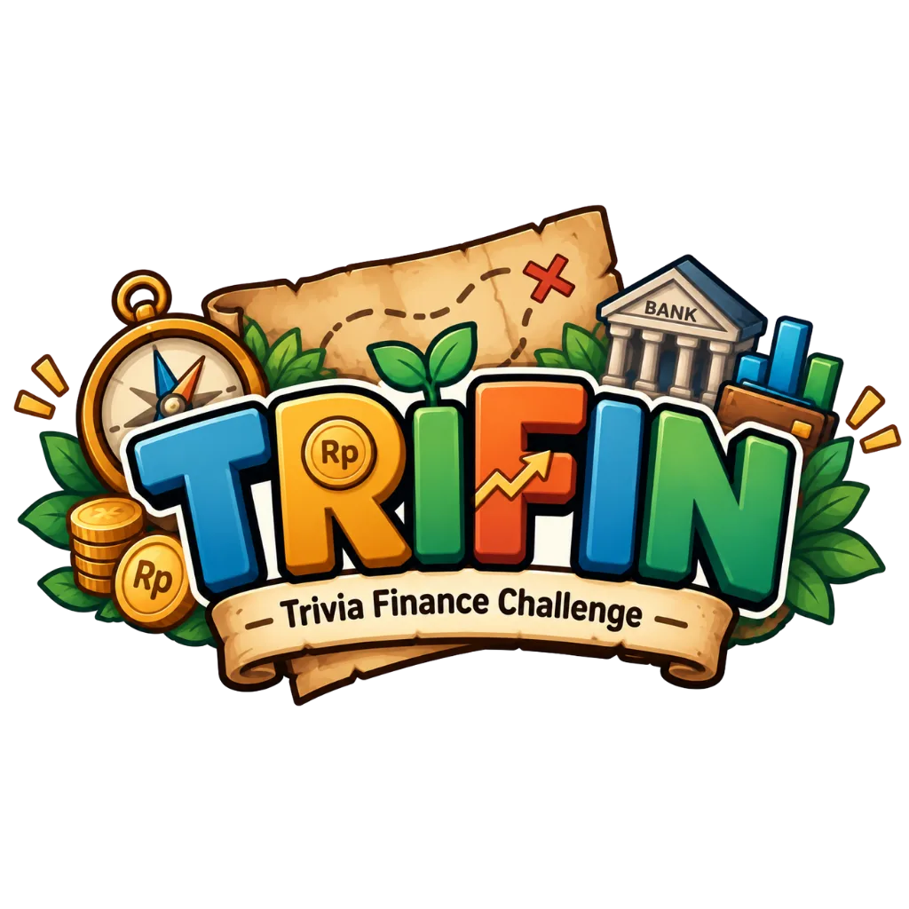

🌟 Inovasi Pembelajaran IPS Kelas IX
Selamat Datang di TRIFIN
Trivia Finance Challenge
"Jelajahi Finansial, Bangun Kecerdasan Masa Depan"
Sebuah petualangan pembelajaran IPS kelas IX yang mengajak kamu menjelajahi dunia uang, lembaga keuangan, transaksi digital, dan literasi finansial melalui tantangan kelompok yang seru, interaktif, dan penuh misi.

Pilih akses untuk memulai petualangan finansialmu bersama TRIFIN.
Akses portal sesuai peran untuk melanjutkan misi pembelajaran.